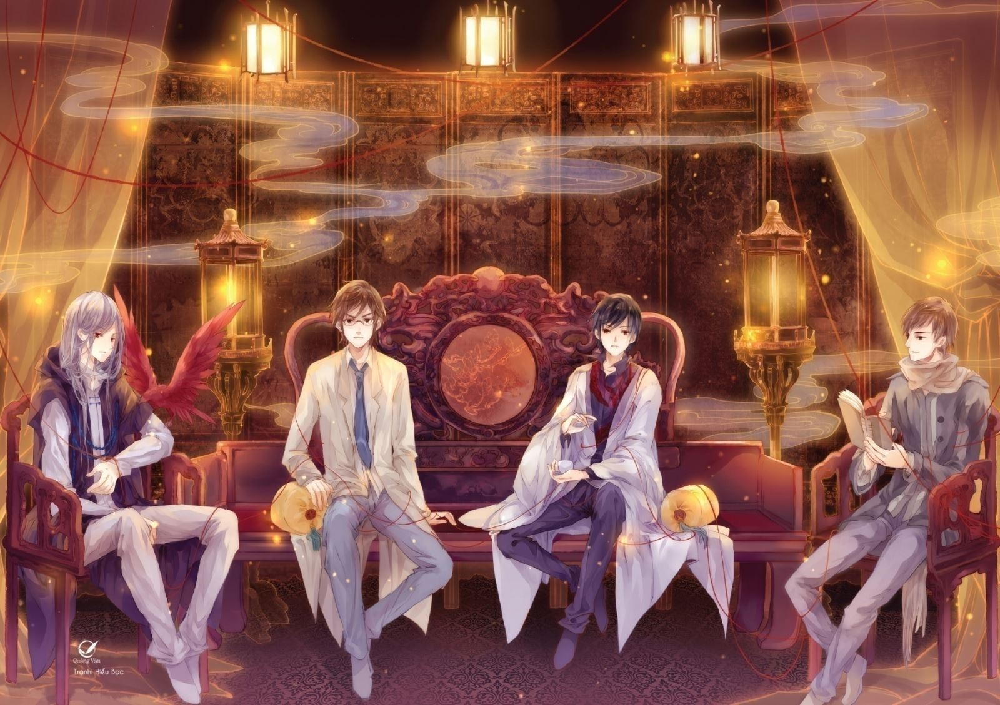

Chòm sao Nhân Mã, nhóm máu AB, một trạch nữ viết truyện chuyên nghiệp, nợ bản thảo chất chồng, không có xu hướng trả sạch nợ.
Sở trường nấu ăn, cũng sở trường tưởng tượng lan man, kỹ năng đặc biệt là nằm mơ, mơ thấy những chuyện ly kỳ cổ quái, tỉnh dậy tiếp tục mơ mộng, cho đến khi giấc mộng đó hóa thành văn chương.
Đi qua đi lại giữa giấc mơ và hiện thực, viết những câu chuyện đẹp đẽ mà bi thương, tiêu biểu là “Tiệm đồ cổ Á Xá”.

Cổ vật trong tiệm đồ cổ Á Xá,
mỗi một thứ đều có câu chuyện của riêng mình,
cất giữ rất nhiều năm,
không có ai lắng nghe,
nhưng chúng đều đang chờ đợi.
Chúng đã nhuốm màu thời gian trăm năm nghìn năm.
Mỗi đồ vật đều ngưng đọng tâm huyết của người thợ, chan chứa tình cảm của người dùng.
Mỗi đồ vật đều thuộc về những chủ nhân khác nhau, đều có câu chuyện của riêng mình.
Mỗi đồ vật đều khác biệt với những thứ khác, thậm chí mỗi vết nứt và vết khuyết đều có lịch sử đặc biệt.
Ai có thể nói, đồ cổ chỉ là đồ vật, đều là những vật không có sức sống?
Đây là cuốn sách kể về câu chuyện của những món đồ cổ, nếu chúng không thể nói chuyện, vậy tôi sẽ dùng câu chữ của mình để ghi chép lại một cách trung thành những câu chuyện của chúng.
Chào mừng tới Á Xá, xin hãy khẽ lời...
Suỵt...
Huyền Sắc
Khóa Trường Mệnh, tương truyền có thể tránh nạn, trừ tà cho trẻ con, “khóa” chặt sinh mệnh. Đeo cho trẻ sơ sinh tới năm mười hai tuổi, đây là tập tục của Hoa Hạ.
Có một cặp vợ chồng nọ vô cùng yêu thương nhau. Một ngày, người chồng bất ngờ qua đời, người vợ đau đớn tột độ, đứa trẻ trong bụng mẹ sinh non. Đứa trẻ thân thể yếu ớt, e rằng chưa đầy tháng sẽ đi theo cha nó. Người vợ đi nhiều nơi cầu cứu, gặp một người, người này hỏi: “Để đứa bé này được sống, cô chấp nhận trả bằng mọi giá? Cô chấp nhận dùng mạng của mình đánh đổi?”.
Người vợ gật đầu.
Người này nói: “Tôi có một chiếc khóa Trường Mệnh, có thể đem mười hai năm tuổi thọ còn lại của cô đổi lấy mười hai năm tuổi thọ cho con trai cô, khóa tới năm mười hai tuổi, khóa gãy, người chết. ‘Khóa Trường Mệnh’ thực ra là “khóa đền mệnh”.
Người vợ tiếp tục cầu xin, thề thốt nếu đứa trẻ có thể khôn lớn trưởng thành, mình dù rơi xuống địa ngục, chịu mọi khổ cực cũng cam lòng.
Người này trầm ngâm một hồi, cuối cùng chấp thuận, nối chiếc khóa Trường Mệnh này có thể khóa mệnh đứa trẻ tới năm hai mươi tư tuổi, hai mươi tư năm sau sẽ đích thân tới lấy lại chiếc khóa.
Người vợ ngậm cười ra đi.
Hai mươi tư năm sau...